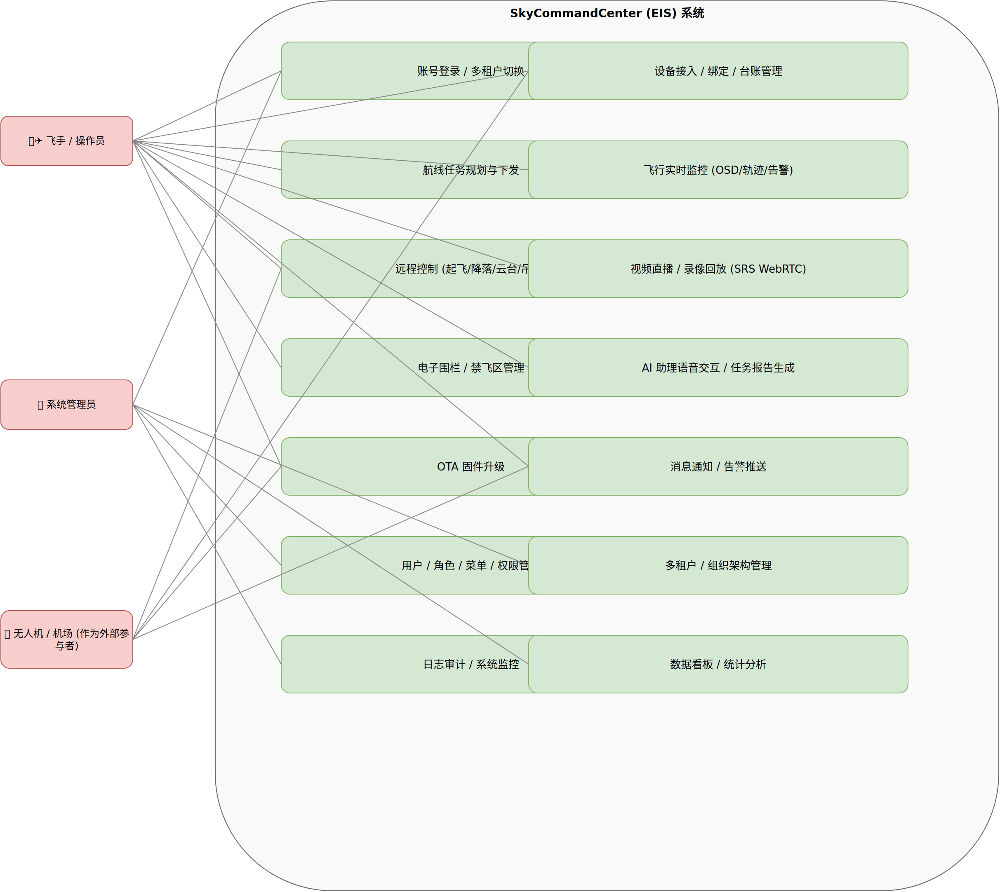
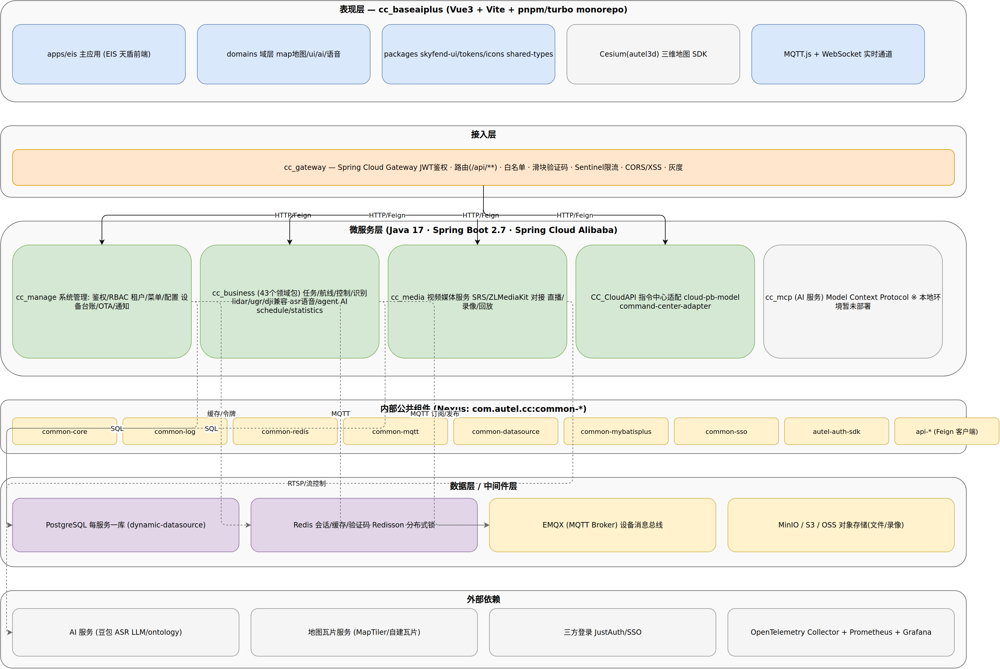
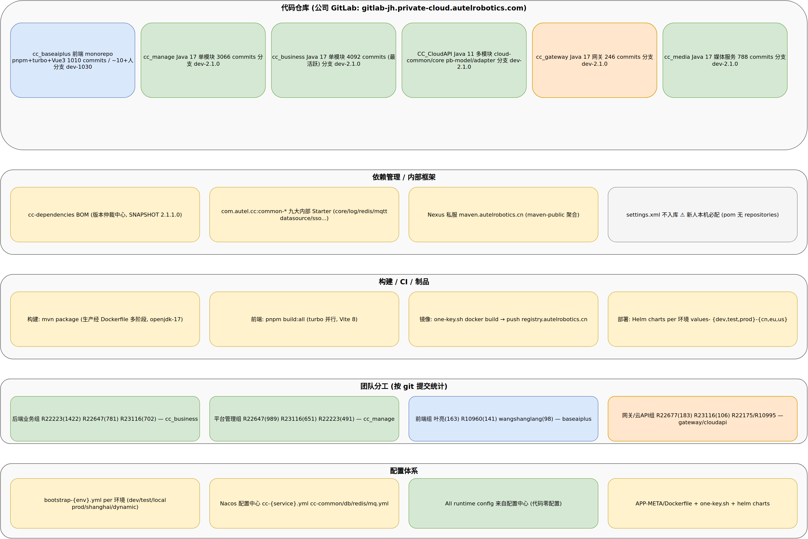
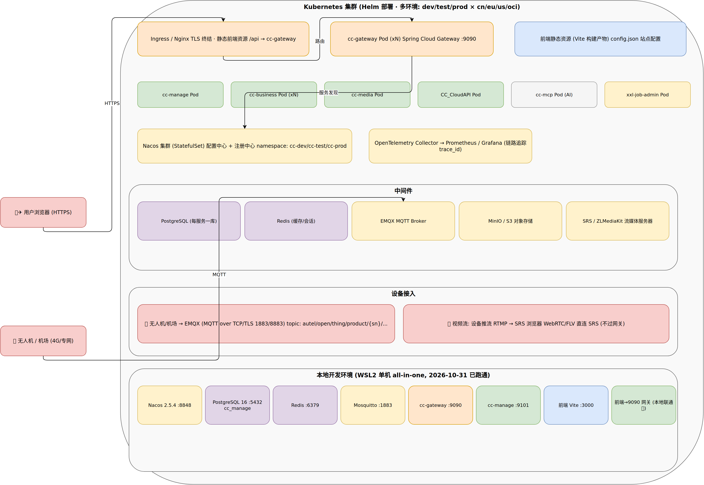
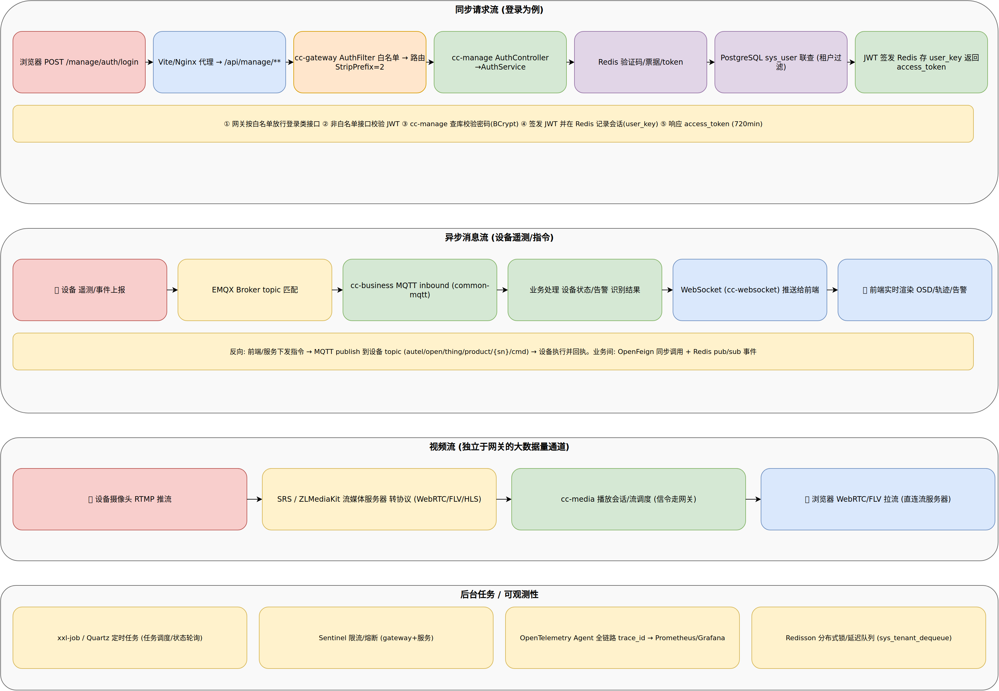

<meta charset="utf-8">
<title>道通智能 EIS 系统架构说明书</title>
<meta name="viewport" content="width=device-width, initial-scale=1">
<link rel="stylesheet" href="https://fonts.googleapis.com/css2?family=Noto+Serif+SC:wght@600;700;900&family=Noto+Sans+SC:wght@400;500;700&family=JetBrains+Mono:wght@400;600&display=swap">
<script>
(function () {
  try {
    var t = localStorage.getItem('theme');
    if (t !== 'light' && t !== 'dark') t = matchMedia('(prefers-color-scheme: dark)').matches ? 'dark' : 'light';
    document.documentElement.setAttribute('data-theme', t);
  } catch (e) {}
})();
</script>
<style>
/* ============ 设计令牌: 工程制图蓝 + 琥珀信号色, 纸面/图板双主题 ============ */
:root {
  --bg: #eef1f6;            /* 冷灰纸面 */
  --panel: #fbfcfe;
  --fg: #182334;
  --muted: #5a6b84;
  --line: #d6deeb;
  --accent: #1d5cc4;        /* 制图蓝 */
  --accent-soft: #e7eefb;
  --signal: #b9791c;        /* 琥珀 */
  --signal-soft: #fdf2e0;
  --ok: #2e7d4f; --ok-soft: #e6f3ec;
  --warn: #a8630f; --warn-soft: #fdf3e0;
  --high: #b23a3a; --high-soft: #fbe9e9;
  --shadow: 0 1px 2px rgba(15,25,40,.06), 0 4px 12px rgba(15,25,40,.04);
  --mono: "JetBrains Mono", ui-monospace, monospace;
  --serif: "Noto Serif SC", serif;
  --sans: "Noto Sans SC", -apple-system, sans-serif;
  color-scheme: light;
}
@media (prefers-color-scheme: dark) { :root:not([data-theme="light"]) {
  --bg: #0d121b; --panel: #151d2a; --fg: #e7ecf4; --muted: #93a0b3; --line: #26334a;
  --accent: #6ea4ff; --accent-soft: #16243c; --signal: #eda54c; --signal-soft: #2a2113;
  --ok: #5cb98a; --ok-soft: #12271c; --warn: #e2a24e; --warn-soft: #2a2113;
  --high: #e07a7a; --high-soft: #2c1616;
  --shadow: 0 1px 2px rgba(0,0,0,.45);
  color-scheme: dark;
}}
:root[data-theme="dark"] {
  --bg: #0d121b; --panel: #151d2a; --fg: #e7ecf4; --muted: #93a0b3; --line: #26334a;
  --accent: #6ea4ff; --accent-soft: #16243c; --signal: #eda54c; --signal-soft: #2a2113;
  --ok: #5cb98a; --ok-soft: #12271c; --warn: #e2a24e; --warn-soft: #2a2113;
  --high: #e07a7a; --high-soft: #2c1616;
  --shadow: 0 1px 2px rgba(0,0,0,.45);
  color-scheme: dark;
}
* { box-sizing: border-box }
[hidden] { display: none !important }
body {
  background: var(--bg); color: var(--fg); font-family: var(--sans); font-size: 15px; line-height: 1.75;
  margin: 0; padding-left: max(16px, env(safe-area-inset-left)); padding-right: max(16px, env(safe-area-inset-right));
}
body::before { /* 制图网格底纹 */
  content: ""; position: fixed; inset: 0; pointer-events: none; z-index: 0; opacity: .5;
  background-image: linear-gradient(var(--line) 1px, transparent 1px), linear-gradient(90deg, var(--line) 1px, transparent 1px);
  background-size: 48px 48px; opacity: .18;
}
main, header.masthead, nav.tabs { position: relative; z-index: 1 }
h1, h2, h3 { font-family: var(--serif); text-wrap: balance; margin: 0 }
h2 { font-size: 26px; font-weight: 900; letter-spacing: .01em }
h3 { font-size: 18px; font-weight: 700 }
p { margin: .5em 0 }
a { color: var(--accent) }
::selection { background: var(--accent-soft); color: var(--fg) }
code, .mono { font-family: var(--mono); font-size: .88em }
code, td { overflow-wrap: break-word }
.node { overflow-wrap: anywhere }

/* ---- 顶栏 / 标题栏 ---- */
header.masthead { padding-block: 34px 14px; max-width: 1060px; margin-inline: auto }
.masthead-top { display: flex; align-items: center; justify-content: space-between; gap: 12px; margin-bottom: 18px }
.docno { font-family: var(--mono); font-size: 12px; letter-spacing: .16em; color: var(--muted) }
.docno b { color: var(--signal); font-weight: 600 }
.masthead h1 { font-size: clamp(32px, 5.5vw, 46px); font-weight: 900; letter-spacing: -.01em; line-height: 1.15; margin: 0 0 12px }
.masthead .sub { color: var(--muted); max-width: 46em; font-size: 15.5px }
.theme-toggle {
  flex: 0 0 auto; width: 38px; height: 38px; border-radius: 50%;
  border: 1px solid var(--line); background: var(--panel); color: var(--fg);
  display: inline-flex; align-items: center; justify-content: center; cursor: pointer;
  transition: border-color .16s, background .16s, transform .12s;
}
.theme-toggle:hover { border-color: var(--accent) }
.theme-toggle:active { transform: scale(.92) }
.theme-toggle svg { width: 18px; height: 18px }
.theme-toggle .ic-moon { display: block }
.theme-toggle .ic-sun { display: none }
html[data-theme="dark"] .theme-toggle .ic-moon { display: none }
html[data-theme="dark"] .theme-toggle .ic-sun { display: block }
.titleblock { display: grid; grid-template-columns: repeat(4, 1fr); border: 1px solid var(--line); background: var(--panel); border-radius: 10px; overflow: hidden; margin-top: 24px }
.tb-cell { padding: 11px 16px; border-left: 1px solid var(--line) }
.tb-cell:first-child { border-left: 0 }
.tb-k { display: block; font-family: var(--mono); font-size: 11px; letter-spacing: .08em; color: var(--muted); margin-bottom: 3px }
.tb-v { font-size: 13.5px; font-weight: 600; color: var(--fg) }

/* ---- 页签导航 ---- */
nav.tabs {
  position: sticky; top: 0; z-index: 30;
  background: var(--bg);
  background: color-mix(in srgb, var(--bg) 84%, transparent);
  -webkit-backdrop-filter: blur(10px) saturate(1.2); backdrop-filter: blur(10px) saturate(1.2);
  border-bottom: 1px solid var(--line);
}
.tabs-inner {
  max-width: 1060px; margin-inline: auto; padding-inline: 4px;
  display: flex; align-items: center; gap: 2px; overflow-x: auto; scrollbar-width: none;
}
.tabs-inner::-webkit-scrollbar { display: none }
nav.tabs button {
  position: relative; flex: 0 0 auto;
  font-family: var(--sans); font-size: 14px; font-weight: 500; white-space: nowrap;
  color: var(--muted); background: none; border: 0; cursor: pointer;
  padding: 13px 13px 12px; transition: color .16s;
}
nav.tabs button:hover { color: var(--fg) }
nav.tabs button[aria-selected="true"] { color: var(--fg); font-weight: 600 }
nav.tabs button::after {
  content: ""; position: absolute; left: 11px; right: 11px; bottom: 0; height: 2px;
  border-radius: 2px; background: var(--accent); opacity: 0; transform: scaleX(.5);
  transition: opacity .18s, transform .18s;
}
nav.tabs button[aria-selected="true"]::after { opacity: 1; transform: scaleX(1) }
nav.tabs button:focus-visible { outline: 2px solid var(--signal); outline-offset: -2px }
.tabs-sep { flex: 0 0 auto; width: 1px; height: 18px; background: var(--line); margin-inline: 8px }

/* ---- 版块 ---- */
main { max-width: 1060px; margin-inline: auto; padding-block: 20px 80px }
section[hidden] { display: none !important }
section .lede { color: var(--muted); max-width: 48em; margin-bottom: 22px }
.card {
  background: var(--panel); border: 1px solid var(--line); border-radius: 10px;
  padding: 20px 22px; box-shadow: var(--shadow);
}
.grid { display: grid; gap: 14px }
.g2 { grid-template-columns: repeat(auto-fit, minmax(280px, 1fr)) }
.g3 { grid-template-columns: repeat(auto-fit, minmax(220px, 1fr)) }
.stack { display: flex; flex-direction: column; gap: 14px }

/* 大数字 */
.stat-row { display: grid; gap: 14px; grid-template-columns: repeat(auto-fit, minmax(150px, 1fr)); margin: 26px 0 }
.stat { background: var(--panel); border: 1px solid var(--line); border-radius: 10px; padding: 16px 18px; box-shadow: var(--shadow) }
.stat .n { font-family: var(--mono); font-size: 30px; font-weight: 600; color: var(--accent); line-height: 1.1 }
.stat .t { font-size: 13px; color: var(--muted); margin-top: 4px }

/* 架构图 */
figure.diagram { margin: 24px 0 0 }
figure.diagram .frame {
  background: var(--panel); border: 1px solid var(--line); border-radius: 10px;
  padding: 12px; box-shadow: var(--shadow); cursor: zoom-in;
}
figure.diagram img { display: block; width: 100%; max-width: 100%; border-radius: 6px }
figure.diagram figcaption { font-size: 13px; color: var(--muted); margin-top: 10px; text-align: center }

/* 表格 */
.tbl-wrap { overflow-x: auto; border: 1px solid var(--line); border-radius: 10px; background: var(--panel); box-shadow: var(--shadow) }
table { border-collapse: collapse; width: 100%; font-size: 13.5px; min-width: 620px }
th, td { text-align: left; padding: 10px 14px; border-bottom: 1px solid var(--line); vertical-align: top }
th { font-size: 12px; letter-spacing: .08em; color: var(--muted); background: var(--accent-soft); font-weight: 700; white-space: nowrap }
tr:last-child td { border-bottom: none }
td b { color: var(--accent) }

/* 层级条 (逻辑视图) */
.layer { display: flex; gap: 14px; align-items: stretch }
.layer .tag {
  flex: 0 0 auto; writing-mode: initial; font-family: var(--mono); font-size: 12px; font-weight: 600;
  background: var(--accent-soft); color: var(--accent); border: 1px solid var(--line);
  border-radius: 8px; padding: 10px 12px; align-self: flex-start; min-width: 96px; text-align: center;
}
.layer .body { min-width: 0; flex: 1 }
.flow { display: flex; flex-wrap: wrap; gap: 8px; align-items: center; margin: 10px 0 }
.flow .node {
  border: 1px solid var(--line); background: var(--accent-soft); color: var(--fg);
  border-radius: 8px; padding: 6px 12px; font-size: 13px; font-weight: 500;
}
.flow .arr { color: var(--muted); font-family: var(--mono) }

/* 风险卡 */
.risk { border-left: 4px solid var(--line); }
.risk.high   { border-left-color: var(--high) }
.risk.medium { border-left-color: var(--warn) }
.risk.low    { border-left-color: var(--ok) }
.risk .sev { font-family: var(--mono); font-size: 11px; letter-spacing: .15em; font-weight: 600 }
.risk.high .sev { color: var(--high) } .risk.medium .sev { color: var(--warn) } .risk.low .sev { color: var(--ok) }

/* 提示框 */
.note { border: 1px dashed var(--accent); background: var(--accent-soft); border-radius: 10px; padding: 16px 20px; }
.note b { color: var(--accent) }
.lightbox {
  position: fixed; inset: 0; z-index: 50; background: rgba(8,12,20,.82);
  display: flex; align-items: center; justify-content: center; padding: 24px;
}
.lightbox img { max-width: 100%; max-height: 100%; border-radius: 8px }
.lightbox .close {
  position: absolute; top: 18px; right: 22px; font-size: 15px; font-family: var(--sans);
  background: var(--panel); color: var(--fg); border: 1px solid var(--line); border-radius: 8px; padding: 6px 14px; cursor: pointer;
}
footer { max-width: 1060px; margin-inline: auto; padding-block: 30px 60px; color: var(--muted); font-size: 13px; border-top: 1px solid var(--line) }

/* ============ 移动端适配（手机） ============ */
@media (max-width: 640px) {
  body { font-size: 14.5px; line-height: 1.7; -webkit-text-size-adjust: 100% }
  header.masthead { padding-block: 22px 12px }
  .masthead-top { margin-bottom: 14px }
  .docno { font-size: 11px; letter-spacing: .1em }
  .masthead h1 { font-size: 28px }
  .masthead .sub { font-size: 14.5px }
  .titleblock { grid-template-columns: repeat(2, 1fr); margin-top: 18px }
  .tb-cell { padding: 10px 13px }
  .tb-cell:nth-child(odd) { border-left: 0 }
  .tb-cell:nth-child(n+3) { border-top: 1px solid var(--line) }
  .tabs-inner { padding-inline: 0 }
  nav.tabs button { padding: 12px 12px 11px; font-size: 13px }
  main { padding-block: 14px 48px }
  h2 { font-size: 21px }
  h3 { font-size: 17px }
  .card { padding: 15px 16px }
  .grid, .stack, .stat-row { gap: 10px }
  .stat-row { grid-template-columns: repeat(2, 1fr); margin: 20px 0 }
  .stat { padding: 12px 14px }
  .stat .n { font-size: 24px }
  .layer { flex-direction: column; gap: 8px }
  .layer .tag { min-width: 0; align-self: stretch }
  .flow { gap: 6px }
  .flow .node { font-size: 12px; padding: 5px 10px; min-width: 0 }
  figure.diagram .frame { padding: 8px }
  figure.diagram figcaption { font-size: 12px; margin-top: 8px }
  .tbl-wrap { -webkit-overflow-scrolling: touch }
  .note { padding: 14px 16px }
  .lightbox { padding: 12px }
  .lightbox .close { top: 10px; right: 12px; padding: 8px 12px }
  footer { padding-block: 24px 40px; font-size: 12.5px }
}
@media (prefers-reduced-motion: reduce) { * { transition: none !important; animation: none !important } }
</style>

<header class="masthead">
  <div class="masthead-top">
    <span class="docno"><b>EIS</b> · ARCHITECTURE WHITEPAPER</span>
    <button id="themeToggle" class="theme-toggle" type="button" aria-label="切换深浅色模式" title="切换深浅色">
      <svg class="ic-moon" viewBox="0 0 24 24" fill="none" stroke="currentColor" stroke-width="1.7" stroke-linecap="round" stroke-linejoin="round" aria-hidden="true"><path d="M21 12.8A9 9 0 1 1 11.2 3a7 7 0 0 0 9.8 9.8Z"/></svg>
      <svg class="ic-sun" viewBox="0 0 24 24" fill="none" stroke="currentColor" stroke-width="1.7" stroke-linecap="round" stroke-linejoin="round" aria-hidden="true"><circle cx="12" cy="12" r="4.2"/><path d="M12 2.5v2.2M12 19.3v2.2M4.6 4.6l1.6 1.6M17.8 17.8l1.6 1.6M2.5 12h2.2M19.3 12h2.2M4.6 19.4l1.6-1.6M17.8 6.2l1.6-1.6"/></svg>
    </button>
  </div>
  <h1>道通智能 EIS 系统架构说明书</h1>
  <p class="sub">无人机指挥中心（天盾 / SkyShield）软件架构逆向工程报告。基于 6 个代码仓库、9,800+ 提交记录、依赖清单与部署配置整理，按 Kruchten 4+1 视图模型组织。</p>
  <div class="titleblock">
    <div class="tb-cell"><span class="tb-k">版本基线</span><span class="tb-v">dev-2.1.0 / dev-1030</span></div>
    <div class="tb-cell"><span class="tb-k">整理日期</span><span class="tb-v">2026-10-31</span></div>
    <div class="tb-cell"><span class="tb-k">方法</span><span class="tb-v">逆向工程（代码 + Git + 配置）</span></div>
    <div class="tb-cell"><span class="tb-k">本地验证</span><span class="tb-v">已跑通全链路</span></div>
  </div>
</header>

<nav class="tabs" role="tablist" aria-label="架构视图页签">
  <div class="tabs-inner">
    <button role="tab" data-tab="overview"  aria-selected="true">总览</button>
    <button role="tab" data-tab="usecase"   aria-selected="false">① 用例视图</button>
    <button role="tab" data-tab="logical"   aria-selected="false">② 逻辑视图</button>
    <button role="tab" data-tab="development" aria-selected="false">③ 开发视图</button>
    <button role="tab" data-tab="physical"  aria-selected="false">④ 物理视图</button>
    <button role="tab" data-tab="process"   aria-selected="false">⑤ 进程视图</button>
    <span class="tabs-sep" aria-hidden="true"></span>
    <button role="tab" data-tab="stack"     aria-selected="false">技术栈明细</button>
    <button role="tab" data-tab="risks"     aria-selected="false">风险与建议</button>
  </div>
</nav>

<main>
<!-- ================= 总览 ================= -->
<section id="tab-overview" role="tabpanel">
  <p class="lede">EIS 是面向政企场景的无人机指挥中心平台：把多型号无人机与自动机场接入统一平台，覆盖「接入 → 任务 → 监控 → 控制 → 复盘」全流程，并内置 AI 语音助理。系统采用前后端分离 + 微服务架构，运行于 Kubernetes，已在国家/欧洲/北美多区域部署。</p>

  <div class="stat-row">
    <div class="stat"><div class="n">6+1</div><div class="t">代码仓库<br>(6 个在研 + cc-mcp AI 服务)</div></div>
    <div class="stat"><div class="n">9,814</div><div class="t">Git 提交总量<br>(dev 分支)</div></div>
    <div class="stat"><div class="n">43</div><div class="t">cc_business<br>业务领域包</div></div>
    <div class="stat"><div class="n">5</div><div class="t">Spring Cloud<br>后端微服务</div></div>
    <div class="stat"><div class="n">3×4</div><div class="t">部署环境<br>(dev/test/prod × cn/eu/us)</div></div>
  </div>

  <div class="stack">
    <div class="card">
      <h3>系统定位一句话</h3>
      <p>以「指挥中心」为核心：前端是三维地图工作台（Cesium/autel3D），后端是围绕设备遥测（MQTT）、任务航线、视频流（SRS）与 AI 语音（豆包 ASR/LLM）编排起来的 Spring Cloud 微服务群，Nacos 是全系统的配置与服务注册中枢。</p>
    </div>
    <div class="grid g2">
      <div class="card"><h3>🧭 架构原则</h3>
        <p>① <b>配置外置</b>——服务自身零配置，启动时全部从 Nacos 拉取；② <b>网关收口</b>——所有 API 经 cc-gateway 鉴权/路由；③ <b>领域拆分</b>——43 个业务包按无人机领域划分（任务/航线/控制/识别/媒体…）；④ <b>内部框架复用</b>——common-* 九件套统一横切能力。</p>
      </div>
      <div class="card"><h3>🧪 本地验证结论（2026-10-31）</h3>
        <p>已在单机（WSL2 Linux）完整复刻运行环境：Nacos + PostgreSQL + Redis + EMQX(Mosquitto) + 网关 + cc_manage + 前端，端到端登录成功并落库验证。该验证过程本身构成对架构描述正确性的实测依据。</p>
      </div>
    </div>
    <div class="card"><h3>🛰️ 服务全景（数据链路速览）</h3>
      <div class="flow">
        <span class="node">设备(无人机/机场)</span><span class="arr">─MQTT→</span><span class="node">EMQX</span>
        <span class="arr">→</span><span class="node">cc-business / cc-manage</span>
        <span class="arr">─WebSocket→</span><span class="node">浏览器三维地图</span>
      </div>
      <div class="flow">
        <span class="node">浏览器</span><span class="arr">─HTTPS→</span><span class="node">Ingress</span>
        <span class="arr">→</span><span class="node">cc-gateway (JWT)</span>
        <span class="arr">→</span><span class="node">各微服务 (Feign/负载均衡)</span>
      </div>
      <div class="flow">
        <span class="node">设备摄像头</span><span class="arr">─RTMP→</span><span class="node">SRS/ZLMediaKit</span>
        <span class="arr">→</span><span class="node">浏览器 WebRTC 拉流 (信令经 cc-media)</span>
      </div>
    </div>
  </div>
</section>

<!-- ================= 用例视图 ================= -->
<section id="tab-usecase" role="tabpanel" hidden>
  <p class="lede">三类参与者与 14 个关键用例。飞手/操作员是核心角色，覆盖「管设备 → 计划任务 → 飞行监控 → 远程控制 → 数据复盘」闭环；管理员负责平台自身的组织与权限治理；设备作为系统参与者被动接入与升级。</p>
  <figure class="diagram">
    <div class="frame" data-zoom="usecase.png"></div>
    <figcaption>图 1 · 用例视图（点击放大）— 源文件 01-用例视图.drawio</figcaption>
  </figure>
  <div class="grid g2" style="margin-top:18px">
    <div class="card"><h3>核心业务用例（飞手）</h3>
      <p>航线任务规划与下发、飞行实时监控（OSD 遥测/轨迹/告警）、远程控制（起降/云台/吊舱）、视频直播与回放、电子围栏管理、AI 语音助理与任务报告生成。这一组用例贯穿 cc_business 的 43 个领域包。</p></div>
    <div class="card"><h3>平台治理用例（管理员）</h3>
      <p>多租户管理、用户/角色/菜单权限（RBAC）、系统配置、日志审计。全部落在 cc_manage——它是整个平台的「控制面」，其余服务是「数据面」。</p></div>
  </div>
</section>

<!-- ================= 逻辑视图 ================= -->
<section id="tab-logical" role="tabpanel" hidden>
  <p class="lede">逻辑上分为六层。最重要的两条设计事实：一是<b>全部运行时配置在 Nacos 配置中心</b>（本地化部署时这是第一道门槛）；二是 <b>common-* 内部框架九件套</b>承担了鉴权、日志、MQTT、多数据源等所有横切关注点，业务代码只是「填领域逻辑」。</p>
  <figure class="diagram">
    <div class="frame" data-zoom="logical.png"></div>
    <figcaption>图 2 · 逻辑视图（点击放大）— 源文件 02-逻辑视图.drawio</figcaption>
  </figure>
  <div class="stack" style="margin-top:18px">
    <div class="layer"><div class="tag">表现层</div><div class="body card">Vue 3 + Vite 8 monorepo（pnpm + turbo）。主应用 apps/eis 按领域组织（map / ui / ai / 语音），设计系统独立成包（skyfend-ui/tokens/icons），地图基于 Cesium 封装的 autel3D SDK。实时通道走 MQTT.js + WebSocket。</div></div>
    <div class="layer"><div class="tag">接入层</div><div class="card body">cc-gateway（Spring Cloud Gateway）：JWT 校验、白名单放行、滑块验证码、Sentinel 限流、CORS/XSS 过滤。前端所有 API 以 <code>/api/**</code> 进网关，按前缀路由到各服务。</div></div>
    <div class="layer"><div class="tag">服务层</div><div class="body card">
      <b>cc_manage</b> 控制面（鉴权/RBAC/租户/设备台账/OTA/通知，接口前缀 /auth /system /device…）；<br>
      <b>cc_business</b> 数据面主体（43 领域包：任务调度 wayline/schedule、飞行控制 control、目标识别 discern、激光雷达 lidar、DJI 协议兼容、语音 asr、AI agent、统计…）；<br>
      <b>cc_media</b> 视频面（SRS/ZLMediaKit 对接，直播/录像）；<br>
      <b>CC_CloudAPI</b> 指令适配层（protobuf 模型 + command-center-adapter，Java 11）；<br>
      <b>cc_mcp</b> AI 面（MCP 协议，独立演进）。</div></div>
    <div class="layer"><div class="tag">公共件</div><div class="body card">common-core/log/redis/mqtt/datasource/mybatisplus/sso + autel-auth-sdk + api-*（Feign 客户端包）。以 SNAPSHOT 版本发布到公司 Nexus，是所有服务的公共运行时基座。</div></div>
    <div class="layer"><div class="tag">数据层</div><div class="body card">PostgreSQL（baomidou dynamic-datasource 多数据源，主/从分离）；Redis（会话、验证码、Redisson 分布式锁与延迟队列）；EMQX 设备消息总线；MinIO/S3 对象存储。</div></div>
    <div class="layer"><div class="tag">外部</div><div class="body card">豆包 ASR / LLM / ontology 知识图谱（AI 链路）、地图瓦片服务、JustAuth 三方登录、OpenTelemetry + Prometheus 可观测体系。</div></div>
  </div>
</section>

<!-- ================= 开发视图 ================= -->
<section id="tab-development" role="tabpanel" hidden>
  <p class="lede">六个仓库按服务边界切分，单人深耕单仓（最高单人 1,422 commits），主干分支长期演进（dev-2.1.0）。依赖治理的核心是 cc-dependencies BOM —— 它决定全平台版本，且以 SNAPSHOT 滚动发布。</p>
  <figure class="diagram">
    <div class="frame" data-zoom="development.png"></div>
    <figcaption>图 3 · 开发视图（点击放大）— 源文件 03-开发视图.drawio</figcaption>
  </figure>
  <div class="tbl-wrap" style="margin-top:18px">
    <table>
      <thead><tr><th>仓库</th><th>技术基线</th><th>提交量</th><th>主力贡献者</th><th>说明</th></tr></thead>
      <tbody>
        <tr><td><b>cc_business</b></td><td>Java 17 · 单模块</td><td>4,092</td><td>R22223(1422) R22647(781) R23116(702)</td><td>最活跃，43 领域包</td></tr>
        <tr><td><b>cc_manage</b></td><td>Java 17 · 单模块</td><td>3,066</td><td>R22647(989) R23116(651) R22223(491)</td><td>系统管理/控制面</td></tr>
        <tr><td><b>cc_baseaiplus</b></td><td>Vue3 + Vite8 · monorepo</td><td>1,010</td><td>叶亮(163) R10960(141) wangshanglang(98)</td><td>前端，分支 dev-1030</td></tr>
        <tr><td><b>cc_media</b></td><td>Java 17</td><td>788</td><td>R22647(306) R22223(136)</td><td>视频媒体</td></tr>
        <tr><td><b>CC_CloudAPI</b></td><td>Java 11 · 4 子模块</td><td>612</td><td>R22677(183) R22223(122)</td><td>指令中心适配</td></tr>
        <tr><td><b>cc_gateway</b></td><td>Java 17 · SC Gateway</td><td>246</td><td>R23116(106) R22175(27)</td><td>API 网关</td></tr>
      </tbody>
    </table>
  </div>
  <div class="grid g2" style="margin-top:16px">
    <div class="card"><h3>构建与制品</h3><p>后端：<code>mvn package</code> → Dockerfile 多阶段构建（公司内部 openjdk-17 基础镜像 + OpenTelemetry JavaAgent）→ one-key.sh 推送 registry.autelrobotics.cn。前端：<code>pnpm build:all</code>（turbo 并行）。部署物为 Helm chart，每环境一份 values 文件。</p></div>
    <div class="card"><h3>配置体系</h3><p>每个服务带 7 份 bootstrap-{env}.yml（dev/test/local/prod/shanghai/dynamic…），但它们只是「指向哪个 Nacos」的引导配置；真正的数据库、Redis、MQTT、业务参数全部在 Nacos 配置中心按 dataId（cc-{service}.yml / cc-common.yml / cc-db.yml…）下发。</p></div>
  </div>
</section>

<!-- ================= 物理视图 ================= -->
<section id="tab-physical" role="tabpanel" hidden>
  <p class="lede">生产形态：Kubernetes + Helm，按 dev / test / prod 三级环境部署在中国、欧洲、北美多区域。设备侧经 4G/专网以 MQTT 接入 EMQX，视频走独立流媒体通道。页面下方同时给出本机复刻的验证环境——它与生产同构，是理解部署拓扑的最小样本。</p>
  <figure class="diagram">
    <div class="frame" data-zoom="physical.png"></div>
    <figcaption>图 4 · 物理视图（点击放大）— 源文件 04-物理视图.drawio</figcaption>
  </figure>
  <div class="tbl-wrap" style="margin-top:18px">
    <table>
      <thead><tr><th>层次</th><th>生产环境</th><th>本地验证环境（已跑通）</th></tr></thead>
      <tbody>
        <tr><td>接入</td><td>Ingress/Nginx + TLS</td><td>Vite dev server 代理</td></tr>
        <tr><td>网关</td><td>cc-gateway Pod（多副本）</td><td>cc-gateway :9090 单实例</td></tr>
        <tr><td>服务</td><td>各微服务 Pod（可扩缩）</td><td>cc-manage :9101 单实例</td></tr>
        <tr><td>注册/配置</td><td>Nacos 集群（namespace 按环境隔离）</td><td>Nacos 2.5.4 standalone（fzw_local）</td></tr>
        <tr><td>数据库</td><td>PostgreSQL（每服务一库，主从）</td><td>PostgreSQL 16 单机（cc_manage 库）</td></tr>
        <tr><td>消息</td><td>EMQX 集群</td><td>Mosquitto :1883</td></tr>
        <tr><td>可观测</td><td>OTel Agent → Prometheus/Grafana</td><td>日志文件（run_local.log）</td></tr>
      </tbody>
    </table>
  </div>
</section>

<!-- ================= 进程视图 ================= -->
<section id="tab-process" role="tabpanel" hidden>
  <p class="lede">运行时存在三条相互独立的通道：控制面 HTTP 同步流、设备面 MQTT 异步流、视频面流媒体直连通道。把它们分开设计是正确的——视频和遥测的大流量不经过网关，网关只承载 API。</p>
  <figure class="diagram">
    <div class="frame" data-zoom="process.png"></div>
    <figcaption>图 5 · 进程视图（点击放大）— 源文件 05-进程视图.drawio</figcaption>
  </figure>
  <div class="stack" style="margin-top:18px">
    <div class="card"><h3>同步流 · 登录时序（本地已实测）</h3>
      <div class="flow"><span class="node">浏览器</span><span class="arr">→</span><span class="node">代理 /api/manage/**</span><span class="arr">→</span><span class="node">网关 AuthFilter(白名单)</span><span class="arr">→</span><span class="node">StripPrefix 路由</span><span class="arr">→</span><span class="node">cc-manage AuthService</span><span class="arr">→</span><span class="node">PG 用户联查(BCrypt)</span><span class="arr">→</span><span class="node">JWT 签发 + Redis 会话</span></div>
      <p>非白名单接口先过 JWT 校验；登录响应含 access_token（720 分钟）。本地实测：真实返回 token 且审计落库。</p></div>
    <div class="card"><h3>异步流 · 设备遥测</h3>
      <div class="flow"><span class="node">设备</span><span class="arr">─publish→</span><span class="node">EMQX topic: autel/open/thing/product/{sn}/…</span><span class="arr">→</span><span class="node">common-mqtt 订阅</span><span class="arr">→</span><span class="node">cc-business 处理</span><span class="arr">─WS→</span><span class="node">前端实时渲染</span></div>
      <p>反向指令同样走 MQTT 下发并等待设备回执（专用的 fence-sync 线程池保证同步指令不丢失）。业务间另有 Redis pub/sub 事件与 Redisson 延迟队列。</p></div>
    <div class="card"><h3>视频流 · 大数据量旁路</h3>
      <div class="flow"><span class="node">设备 RTMP 推流</span><span class="arr">→</span><span class="node">SRS/ZLMediaKit 转协议</span><span class="arr">→</span><span class="node">浏览器 WebRTC/FLV 直连拉流</span></div>
      <p>cc-media 只负责信令与会话调度（经网关），流本身不进微服务集群。</p></div>
    <div class="card"><h3>后台进程与可观测</h3>
      <p>xxl-job/Quartz 定时任务；Sentinel 网关级限流熔断；Redisson 分布式锁；所有服务挂 OpenTelemetry JavaAgent，日志带 trace_id 贯穿全链路，指标汇入 Prometheus/Grafana。</p></div>
  </div>
</section>

<!-- ================= 技术栈 ================= -->
<section id="tab-stack" role="tabpanel" hidden>
  <p class="lede">按层罗列实际使用的技术与组件，版本取自构建产物（非文档声明）。</p>
  <div class="tbl-wrap"><table>
    <thead><tr><th>层</th><th>技术</th><th>版本/形态</th><th>用途</th></tr></thead>
    <tbody>
      <tr><td>前端</td><td><b>Vue 3 / Vite / UnoCSS / Element Plus</b></td><td>3.5 / 8.x</td><td>SPA + 组件体系</td></tr>
      <tr><td>前端</td><td><b>Cesium (autel3D)</b></td><td>自封装 SDK</td><td>三维地图/航线/视锥</td></tr>
      <tr><td>前端</td><td><b>pnpm + turbo</b></td><td>9.15 / 2.x</td><td>monorepo 编排</td></tr>
      <tr><td>后端</td><td><b>Spring Boot / Spring Cloud Alibaba</b></td><td>2.7.x / 2021.0.4</td><td>微服务基座</td></tr>
      <tr><td>后端</td><td><b>Nacos</b></td><td>client 2.3.3</td><td>配置中心 + 注册中心</td></tr>
      <tr><td>后端</td><td><b>MyBatis-Plus + dynamic-datasource</b></td><td>—</td><td>ORM + 多数据源/多租户插件</td></tr>
      <tr><td>后端</td><td><b>Sentinel / OpenFeign / xxl-job</b></td><td>—</td><td>限流熔断 / 服务调用 / 调度</td></tr>
      <tr><td>数据</td><td><b>PostgreSQL / Redis(Redisson) / EMQX</b></td><td>—</td><td>主存储 / 缓存锁 / 设备消息</td></tr>
      <tr><td>媒体</td><td><b>SRS / ZLMediaKit</b></td><td>—</td><td>WebRTC/RTMP 流媒体</td></tr>
      <tr><td>AI</td><td><b>豆包 ASR / LLM / MCP</b></td><td>—</td><td>语音转写 / 助理 / 工具协议</td></tr>
      <tr><td>可观测</td><td><b>OpenTelemetry / Prometheus / Grafana</b></td><td>javaagent</td><td>链路追踪 / 指标</td></tr>
      <tr><td>交付</td><td><b>Docker / Helm / GitLab CI / Nexus</b></td><td>k8s 多区域</td><td>制品与发布</td></tr>
    </tbody>
  </table></div>
</section>

<!-- ================= 风险与建议 ================= -->
<section id="tab-risks" role="tabpanel" hidden>
  <p class="lede">逆向工程过程中发现的问题，按严重度排列。前四项都在本次本地化部署中被实际踩到，属于「下一个新人还会踩」的确定性成本。</p>
  <div class="stack">
    <div class="card risk high"><span class="sev">HIGH · 安全</span><h3>内部凭证明文入库</h3>
      <p>bootstrap-local.yml 等文件里含 Nacos 账号密码明文（并随仓库分发）。建议：密码移入环境变量或部署时注入；历史密码轮换。</p></div>
    <div class="card risk high"><span class="sev">HIGH · 可维护性</span><h3>数据库 schema 无版本化载体</h3>
      <p>仓库内没有任何建表 SQL/迁移脚本，表结构只存在于各人电脑与各环境库中。建议：引入 Flyway/Liquibase，把 DDL 入库；为新人提供标准 dump。</p></div>
    <div class="card risk high"><span class="sev">HIGH · 工程效率</span><h3>构建依赖仓库外配置</h3>
      <p>pom 无 &lt;repositories&gt; 声明，构建必须依赖不入库的 ~/.m2/settings.xml（指向公司 Nexus 且需显式启用 snapshots）。建议：settings.xml 模板入仓或在 README 显著说明。</p></div>
    <div class="card risk medium"><span class="sev">MEDIUM · 版本治理</span><h3>技术基线不一致</h3>
      <p>CC_CloudAPI 是 Java 11，其余服务 Java 17；Spring Boot 2.7 已进入 EOL 区间。建议：借大版本窗口统一基线，规划 Boot 3 升级。</p></div>
    <div class="card risk medium"><span class="sev">MEDIUM · 复杂度</span><h3>配置全外置的双刃剑</h3>
      <p>服务零配置带来环境灵活性，但也意味着「环境即配置」——本地起一套服务必须先复刻 Nacos 配置树，且配置内容无文档。建议：为每个 dataId 建立键级说明与最小可运行样例。</p></div>
    <div class="card risk medium"><span class="sev">MEDIUM · 可移植性</span><h3>前端代理与网关路由强耦合</h3>
      <p>vite 代理把 /manage 重写为 /api/manage，网关再 StripPrefix——路径约定散落在两处代码里。建议：以一份路径契约文档或生成式配置收敛。</p></div>
    <div class="card risk low"><span class="sev">LOW · 质量</span><h3>小项</h3>
      <p>pom 中 lombok 重复声明；README 均为 GitLab 初始化模板（无真实文档）；分支模型为主干长期分支，建议配合版本 tag 管理。</p></div>
    <div class="note"><b>给汇报的建议口径：</b>系统整体是一个成熟的 Spring Cloud 微服务架构，边界清晰、内部组件复用度高；主要短板不在架构本身，而在「工程资产未入库」（schema、配置说明、构建文档）——这类问题的修复成本低、收益直接。</div>
  </div>
</section>
</main>

<footer>
  <p>本报告由逆向工程生成：证据来源包括 6 个仓库的源代码与 Git 历史（截至 dev-2.1.0 / dev-1030，2026-10-31）、Maven/pnpm 依赖树、bootstrap 配置、Helm charts、Dockerfile，以及一次端到端本地部署实测（Nacos/PG/Redis/MQTT/网关/cc_manage/前端全链路登录成功）。架构图源文件（.drawio，可编辑）随报告一并交付。</p>
</footer>

<script>
(function () {
  // 深浅色切换
  var themeToggle = document.getElementById('themeToggle');
  if (themeToggle) themeToggle.addEventListener('click', function () {
    var cur = document.documentElement.getAttribute('data-theme') === 'dark' ? 'dark' : 'light';
    var next = cur === 'dark' ? 'light' : 'dark';
    document.documentElement.setAttribute('data-theme', next);
    try { localStorage.setItem('theme', next); } catch (e) {}
  });

  var tabs = document.querySelectorAll('nav.tabs button');
  var sections = { overview:1, usecase:1, logical:1, development:1, physical:1, process:1, stack:1, risks:1 };
  function show(name) {
    if (!sections[name]) name = 'overview';
    tabs.forEach(function (b) { b.setAttribute('aria-selected', String(b.dataset.tab === name)); });
    Object.keys(sections).forEach(function (k) { document.getElementById('tab-' + k).hidden = (k !== name); });
  }
  tabs.forEach(function (b) { b.addEventListener('click', function () { location.hash = b.dataset.tab; }); });
  window.addEventListener('hashchange', function () { show(location.hash.slice(1)); });
  show(location.hash.slice(1));

  // 图片放大
  var lb = document.createElement('div');
  lb.className = 'lightbox'; lb.hidden = true;
  lb.innerHTML = '<button class="close">关闭 (Esc)</button>';
  document.body.appendChild(lb);
  var lbImg = lb.querySelector('img');
  function close() { lb.hidden = true; }
  lb.addEventListener('click', close);
  document.addEventListener('keydown', function (e) { if (e.key === 'Escape') close(); });
  document.querySelectorAll('[data-zoom]').forEach(function (f) {
    f.addEventListener('click', function () {
      lbImg.src = f.dataset.zoom; lb.hidden = false;
    });
  });
})();
</script>
